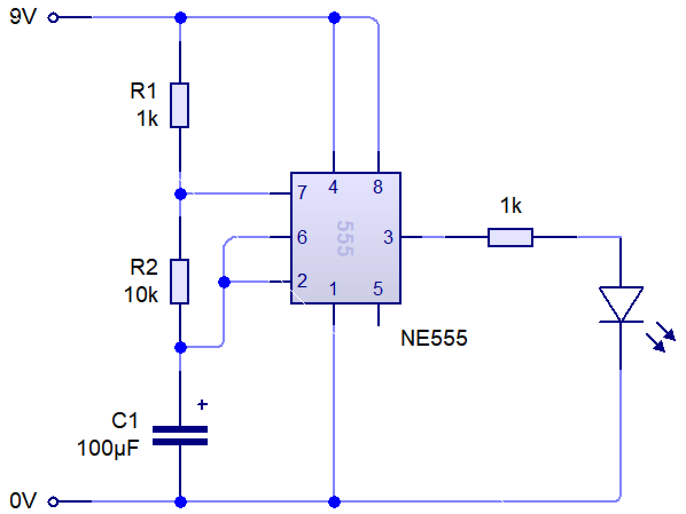
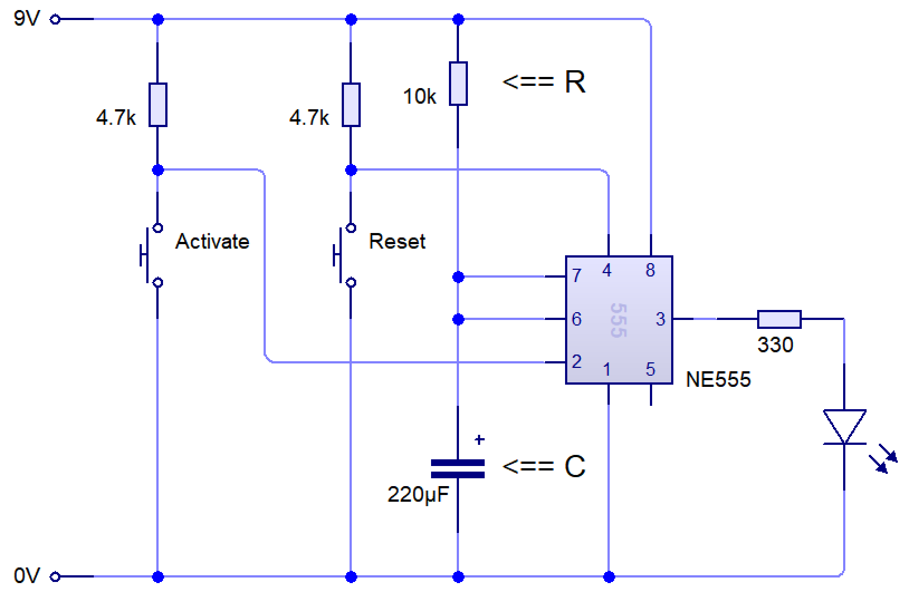

Egg Timer
Egg Timer
Learn It
- Boiling an egg requires perfect timing.
- There are many ways to create a timing circuit, but one of the simplest ways is to use a 555 timer circuit.
- The 555 timer circuit relies on a basic electronic timing circuit which uses resistors and capacitors to use time in different ways.
- A capacitor takes time to charge. We can use this, along with a resistor to create different time delays.
- It's output pin (3) can be made to change its behaviour with these two simple components.
- This is the basis of this project.
Learn It
- A 555 timer can be made to work in a few different ways by changing the circuit slightly.

- The circuit diagram above is called
astable. You can see it running live below.
- The term means that the output pin has no stable state; it will constantly flip between being on and off.
- We can calculate how long it stays on (high) and off (low) for by using a few formulae.
- We can calculate how long the output will stay on (high) for in seconds, with:
- We can see how long the output will be low for (in seconds) with:
- Finally, we can calculate the frequency (number of on/off cycles per second, measured in Hertz) with:
- In the example above, resistor 1 has a value of 1k Ohms. 1k is shorthand for 1000, so R1 = 1000
- Resistor 2 has the value 10k, so R2 = 10000
- The capactor (C) has the value 100 μF. μF is shorthand for 'microfarads'.
- You may already know from science that putting a μ before a measurement means that what we are actually writing is that number x10-6.
- So C = 100 μF = 100 x 10-6 = 0.000100 = 0.0001
- We can now calculate the characteristics of our circuit.
- Time High = 0.7 x (1000 + 10000) x 0.0001
- Time High = 0.77s
- Time Low = 0.7 x 10000 x 0.0001
- Time Low = 0.7s
- Frequency = 1.44 / ((1000 + (2x10000) x 0.0001))
- Frequency = 1.44 / ((1000 + 20000) x 0.0001)
- Frequency = 1.44 / (21000 x 0.0001)
- Frequency = 1.44 / 2.1 = 0.69Hz
- These are handy for all sorts of applications where you want something to flip between on and off constantly. E.g.
- A strobe lighting system for a theatre; the light is flipped on and off several times per second.
- A sound generator pulsing a speaker (555 timers can pulse thousands of times a second).
- A daily automatic fish food dispenser (they can also wait up to about three days between going from off to on).
- A speed controller for a model aeroplane (pulsing a motor on and off swiftly will make it run more slowly).
- A set of lights on top of an emergency response vehicle.
- The Year 7 555 piano. Different resistors make the pitch different. It doesn't have to always be an LED.
Learn It
- Another way is called 'monostable', as the circuit has one stable state: Being turned off.

- In this setup, the output pin (3) stays off until an input (e.g. a switch) is triggered.
- Once triggered, the output is turned on for a set time, then goes back to being off again.
- We can calculate the time delay using a simple formula, T = 1.1 x R x C
- In the example above, R is 10k (so R = 10000)
- C is 220μF. Written in Farads, this is 220 x 10-6 = 0.000220.
- T = 1.1 x 10000 x 0.00022
- T = 2.42 seconds.
- These are handy for all sorts of applications where you want something to happen for a set period of time. E.g.
- A patio heater which is turned on for 2 minutes when a switch is pressed.
- A security door for a block of flats, where the door lock is released for 5 seconds when the owner 'buzzes you in'.
- A door bell, where the bell rings for 3 seconds when someone pushes the bell switch.
- A hand drier, where the heater and fan are energised for 15 seconds when someone waves their hand under the sensor.
- An outdoor security light, where a floodlight is energised for a minute when someone walks past.
Try It
- Try building the
Monostable circuitabove using circuit wizard. - Change the value of
Rand see how it affects the speed at which the LED flashes.
Badge It
Badge
- PART 1: Create the circuit diagram, as per the task above.
- PART 2: Set the resistor and capacitor so that when triggered, there is (roughly) a 1 second delay. Show your calculation.
- Hint: You can use a calculator like this one if you're struggling, to check your values.
- Which type of circuit do you think our egg timer will use? Monostable or astable? Why?
- Extension: Create the astable circuit, and make it flash twice in a second.
Further reading
- You can learn more here: